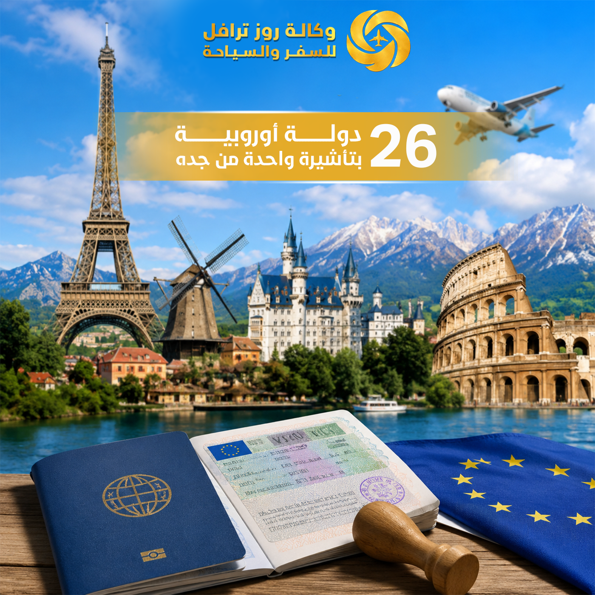

احصل على تأشيرة أوروبية موحدة تتيح لك السفر إلى أكثر من 26 دولة بتأشيرة واحدة – خدمات متكاملة من وكالة روز للسفر والسياحة في جدة
أكثر من 26 دولة
تنسيق المواعيد
مراجعة المستندات
حتى استلام الجواز
يبحث الكثير من المسافرين في المملكة العربية السعودية عن أفضل الطرق للحصول على تأشيرة أوروبية تتيح لهم زيارة عدة دول خلال رحلة واحدة دون الحاجة إلى استخراج تأشيرة مستقلة لكل دولة. وتعد فيزا شنغن من أكثر التأشيرات طلبًا في العالم، حيث تمنح حاملها إمكانية التنقل بين عدد كبير من الدول الأوروبية بتأشيرة واحدة، مما يجعلها الخيار المثالي للراغبين في السياحة أو الأعمال أو زيارة الأقارب والأصدقاء داخل أوروبا.
وعند البحث عن مكتب استخراج فيزا جدة يتمتع بالخبرة والاحترافية، تبرز وكالة روز للسفر والسياحة كواحدة من أبرز الجهات المتخصصة في خدمات التأشيرات الأوروبية، حيث تقدم حلولًا متكاملة تشمل تجهيز الملفات، مراجعة المستندات، حجز موعد فيزا شنغن، متابعة الطلبات، وتقديم الاستشارات اللازمة لزيادة فرص القبول.

وقد أصبحت وكالة روز للسفر والسياحة وجهة مفضلة للعديد من العملاء الباحثين عن أفضل مكتب استخراج فيزا شنغن في جدة بفضل خبرتها الطويلة وفهمها الكامل لمتطلبات السفارات الأوروبية المختلفة.
فيزا شنغن هي تأشيرة تسمح لحاملها بالدخول والتنقل بين عدد كبير من الدول الأوروبية ضمن منطقة شنغن دون الحاجة إلى استخراج تأشيرة منفصلة لكل دولة. وتوفر هذه التأشيرة مرونة كبيرة للمسافرين الراغبين في زيارة أكثر من دولة خلال رحلة واحدة، مما يجعلها من أكثر أنواع التأشيرات طلبًا بين المسافرين من المملكة العربية السعودية.
سهولة التنقل بين الدول المشمولة
استكشاف معالم أوروبا بمرونة
المؤتمرات والاجتماعات التجارية
بدلاً من استخراج عدة تأشيرات
تمتلك وكالة روز للسفر والسياحة خبرة واسعة في مجال التأشيرات والسفر، وتعمل على مساعدة العملاء في جميع مراحل التقديم من خلال خدماتنا المتكاملة.
التأكد من اكتمال الملف وخلوه من الأخطاء الشائعة.
ترتيب المستندات وتقديمها بالشكل المطلوب حسب متطلبات كل سفارة.
التنسيق مع مراكز التأشيرات لاختيار الموعد المناسب.
ملء استمارات طلب التأشيرة بدقة واحترافية.
توفير حجوزات معتمدة لدعم طلب التأشيرة من خلال حجز الطيران وحجز الفنادق.
متابعة الطلب حتى استلام الجواز وتقديم الدعم اللازم.
إرشادات حول الوجهات والبرامج السياحية من خلال برامج سياحية.
ولهذا يفضل الكثير من العملاء التعامل مع وكالة روز للسفر والسياحة عند البحث عن أفضل مكتب استخراج فيزا شنغن في جدة.
يعتمد نجاح طلب فيزا شنغن بشكل كبير على اكتمال المستندات المقدمة. وعادة تشمل المستندات المطلوبة:
وتساعد وكالة روز للسفر والسياحة العملاء على التأكد من استيفاء جميع المتطلبات قبل التقديم من خلال خدمات طلب التأشيرة.
يعتبر حجز موعد فيزا شنغن من أهم مراحل التقديم، حيث يتطلب اختيار الموعد المناسب وتجهيز جميع المستندات قبل الحضور. وتوفر وكالة روز للسفر والسياحة خدمة متابعة المواعيد والتنسيق مع مراكز التأشيرات لضمان جاهزية العميل وتقديم ملف متكامل.
كما تساعد الوكالة في تجنب الأخطاء الشائعة التي قد تؤدي إلى تأخير المعاملة أو طلب مستندات إضافية.
تختلف تكلفة استخراج فيزا شنغن وفق عدة عوامل مهمة، منها:
وتحرص وكالة روز للسفر والسياحة على تقديم أسعار تنافسية وخدمات احترافية تساعد العملاء على إتمام إجراءات السفر بسهولة ووضوح.
على الرغم من أن الكثير من الطلبات يتم قبولها، إلا أن بعض الملفات قد تواجه الرفض لأسباب مختلفة. ومن أبرز هذه الأسباب:
ولهذا تساعد وكالة روز للسفر والسياحة العملاء على مراجعة الملفات بدقة قبل تقديم طلب فيزا شنغن لتقليل احتمالات الرفض.
يستخدم الكثير من المسافرين فيزا شنغن لزيارة مجموعة من الوجهات الأوروبية الشهيرة مثل:
فرنسا
ألمانيا
إيطاليا
سويسرا
النمسا
إسبانيا
هولندا
بلجيكا
وتساعد وكالة روز للسفر والسياحة في تنظيم برامج سياحية متكاملة تشمل حجوزات الطيران والفنادق والتنقلات داخل أوروبا من خلال خدمات النقل.
يمكنكم التعرف على المزيد من خلال مدونتنا وأفضل وكالة سفر في جدة.
لا تقتصر خدمات وكالة روز للسفر والسياحة على تجهيز ملف التأشيرة فقط، بل تمتد لتشمل مجموعة واسعة من الخدمات التي تساعد المسافر على الاستعداد الكامل لرحلته الأوروبية من خلال خدماتنا المتنوعة.
وتساعد هذه الخدمات العملاء على الاستمتاع بتجربة سفر أكثر راحة وتنظيمًا منذ لحظة التقديم وحتى العودة من الرحلة.
تتعامل وكالة روز للسفر والسياحة بشكل يومي مع طلبات تأشيرات للعديد من الدول الأوروبية الشهيرة. ومن أكثر الوجهات التي يفضلها العملاء:
وتساعد وكالة روز للسفر والسياحة في تجهيز البرامج السياحية المناسبة لكل وجهة.
وتقدم وكالة روز للسفر والسياحة الدعم الكامل للعملاء خلال جميع هذه المراحل.
يعتمد بعض المسافرين على التقديم الفردي، بينما يفضل آخرون الاستعانة بوكالة متخصصة مثل وكالة روز للسفر والسياحة.
ولهذا يفضل العديد من العملاء التعامل مع وكالة روز للسفر والسياحة عند تجهيز طلب فيزا شنغن.
تختلف مدة المعالجة حسب السفارة وفترة التقديم، إلا أن التقديم المبكر يساهم في تجنب أي تأخير محتمل.
نعم، تتيح فيزا شنغن التنقل بين العديد من الدول الأوروبية المشمولة ضمن الاتفاقية خلال فترة صلاحية التأشيرة.
نعم، توفر وكالة روز للسفر والسياحة خدمات متكاملة تشمل حجز موعد فيزا شنغن وتجهيز الملف ومتابعة الطلب.
تعد وكالة روز للسفر والسياحة من الجهات المتخصصة التي تقدم خدمات احترافية في مجال التأشيرات الأوروبية والسفر.
نعم، توفر الوكالة خدمات حجز الطيران والفنادق والبرامج السياحية المتكاملة.
يمكنك الاتصال على 0502113147 أو زيارة صفحة الاتصال، فريقنا يرد على مدار الساعة.
سواء كنت تخطط لرحلة سياحية أو رحلة عمل أو شهر عسل داخل أوروبا، فإن وكالة روز للسفر والسياحة توفر لك جميع الخدمات التي تحتاجها بدءًا من تجهيز ملف التأشيرة وحتى تنظيم تفاصيل الرحلة بالكامل.
وبفضل خبرتها الطويلة في مجال التأشيرات الأوروبية وخدمات السفر، أصبحت وكالة روز للسفر والسياحة من أبرز الجهات التي يعتمد عليها العملاء الباحثون عن مكتب استخراج فيزا جدة وخدمات احترافية تساعدهم على السفر بثقة وراحة.
اتصل بنا الآنتصفح خدماتنا الشاملة: جميع خدماتنا | من نحن | مدونتنا | طلب التأشيرة | حجز الطيران | حجز الفنادق | برامج سياحية | رحلات كروز | النقل الداخلي | حجز القطارات